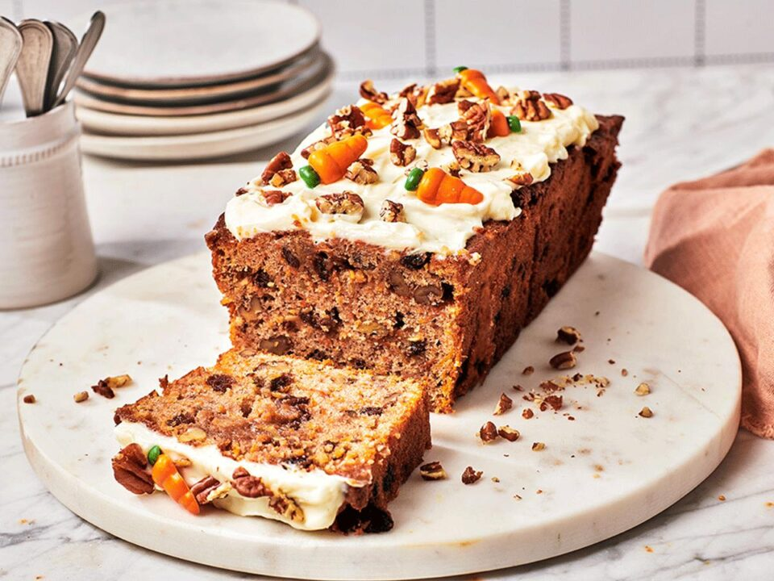

Recetas Saludables
Inicio
Nosotros
Recetas
Galería
Contacto
Recetas sin TACC
Carrot Cake sin TACC

Ver paso a paso
Ingredientes y paso a paso - Carrot Cake sin TACC
Ingredientes:
2 zanahorias ralladas
1 taza de harina sin TACC
2 huevos
½ taza de azúcar mascabo
⅓ taza de aceite vegetal
1 cdta. de polvo de hornear
Canela a gusto
Esencia de vainilla
Nueces (opcional)
Paso a paso:
Precalentar el horno a 180ºC y preparar el molde con manteca y harina sin TACC.
Mezclar ingredientes secos: harina sin gluten, polvo de hornear y canela.
Agregar los ingredientes húmedos: huevos, azúcar y aceite. Batir hasta integrar.
Incorporar zanahoria rallada y nueces picadas.
Verter la mezcla en el molde y hornear por 35-40 minutos.
Dejar enfriar y servir (opcional: agregar frosting).
Budín de Banana sin TACC
Ver paso a paso
Ingredientes y paso a paso - Budín de Banana sin TACC
Ingredientes:
2 bananas maduras pisadas
1 taza de harina de arroz o sin TACC
2 huevos
¼ taza de aceite vegetal
½ taza de azúcar mascabo o stevia
1 cdta. polvo de hornear
Canela y esencia de vainilla
Paso a paso:
Precalentar el horno a 180ºC y engrasar un molde para budín.
Aplastar bien las bananas maduras hasta obtener un puré.
Mezclar el puré con huevos, aceite y esencia de vainilla.
Agregar harina sin TACC, polvo de hornear y endulzante natural.
Verter la mezcla en el molde y hornear por 35-40 minutos.
Dejar enfriar antes de desmoldar.
Galletas de Avena y Manzana
Ver paso a paso
Ingredientes y paso a paso - Galletas de Avena y Manzana
Ingredientes:
1 taza de avena sin gluten
1 manzana rallada
1 huevo
2 cdas. de azúcar mascabo
1 cda. de aceite vegetal
Canela a gusto
1 cdta. polvo de hornear
Paso a paso:
Precalentar el horno a 175ºC y preparar una bandeja con papel manteca.
Mezclar la manzana rallada con avena, canela y azúcar.
Agregar huevo y aceite, y formar una masa húmeda.
Formar bolitas, aplastar y colocar en la bandeja.
Hornear 15-18 minutos o hasta dorar.